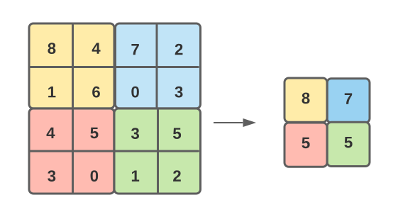
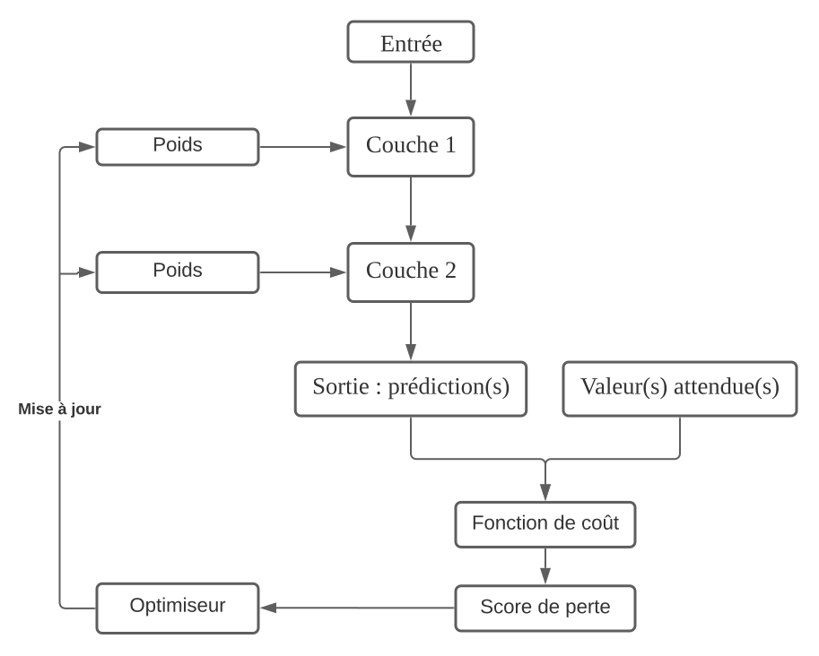

L’architecture d’un réseau de neurones convolutifs se compose d’un agencement de couches et de fonctions de traitement dont voici un exemple ci-dessous.
La représentation du réseau de neurones convolutifs VGG19 :

La couche de convolution associée au zero padding, la fonction ReLU ainsi que la fonction max-pooling :
Légende :
L’opération de convolution n'est autre qu'une multiplication matricielle entre un champ récepteur et une matrice de convolution également appelée filtre ou encore kernel en français noyau, il s'agit d'une matrice intégrant des poids et un biais d'une dimension unique : soit 3x3, soit 5x5 ou 7x7. Cette opération de convolution est renouvelée sur l'ensemble de la matrice d'entrée au moyen d'un mécanisme de glissement du champ récepteur, rythmé par un pas (de un ou plusieurs pixels). Ce pas permet aux champs récepteurs de se chevaucher pour ainsi capter un maximum de caractéristiques de la matrice d'entrée. Le parcours du champ récepteur sur l'ensemble de la matrice d'entrée génère la nouvelle matrice o constituée des résultats de la multiplication matricielle. Après coup, cette matrice est proposée en entrée à la fonction d'activation Rectified Linear Unit (ReLU), en français «unité de rectification linéaire», qui de nos jours est la plus couramment utilisée. Son rôle est de révéler les caractéristiques les plus marquantes de l'image en rendant nul l'ensemble des valeurs négatives de la matrice o. Par conséquent, le but de cette opération de convolution est d’attribuer une importance à des aspects ou objets d'une image tout en donnant la possibilité de les distinguer. Une ou des couches convolutives sont généralement suivies d'une fonction dite de max-pooling où la matrice r proposée en entrée se retrouve réduite en sortie de cette fonction.
En définitive, l'opération de convolution produit une nouvelle matrice appelée une feature map, en français «carte de caractéristiques». Plus précisément, la couche de convolution traite une image en tant que volume de données en entrée, pour fournir en volume de sortie une image plus abstraite que l’originale. Dans cette nouvelle image, seules des caractéristiques filtrées sont conservées. Ainsi, l’image originelle est simplifiée, sa taille est aussi réduite grâce à une opération dite de pooling entraînant une amélioration de l’efficacité statistique. À la différence des perceptrons multicouches où tous les neurones sont connectés à l’ensemble du volume d’entrée, dans un réseau de neurones convolutifs, la connectivité entre les neurones s'effectue de manière locale. En outre, ce réseau force à avoir les mêmes poids pour les mêmes unités situées en plusieurs positions ce qui est un avantage conséquent en terme de diminution du nombre de paramètres, du temps de calcul et de l'occupation mémoire.
La méthode du zero-padding :
Un exemple de zero-padding avec un padding de 2
La marge à zéro, en anglais zero-padding, est un moyen d’élargissement du volume d’entrée, en ajoutant des zéros en dehors des frontières de ce volume, suivant un écart de remplissage sur les quatre côtés. Par exemple dans la figure ci-dessus, l'écart de remplissage ou encore le padding est égale à 2. Cette transformation a pour effet de s’adapter à la taille d’un noyau pouvant dépasser celle de l’entrée à cause du chevauchement de champs récepteurs. En outre, cette augmentation de l’entrée rend un réseau convolutif arbitrairement plus profond et aussi plus efficace.
La fonction d'activation ReLU (Rectified Linear Unit) :
En référence à la fonction d’activation, le résultat d’une convolution est une carte d’activation et l’ensemble des cartes d’activation produit le volume de sortie, autrement dit la carte de caractéristiques. La fonction ReLU engendre la suppression des valeurs négatives d’une carte d’activation en les remplaçant par zéro. L’avantage de la fonction ReLU est qu’elle offre la meilleure rapidité d’entraînement sans nuire à la précision de la généralisation du modèle.
La fonction de max-pooling :
Une fonction de pooling ou mise en commun entraîne une sorte de réduction de la taille spatiale autrement dit un sous-échantillonnage de l’image en effectuant une statistique résumée des sorties voisines via le max-pooling1 remplaçant une matrice de pixels par une valeur unique. Ainsi, l’image diminue en taille, elle est simplifiée et lissée. En outre, le max-pooling retient les caractéristiques les plus marquées et les plus simples de la sélection de pixels.
Un exemple de max-pooling d’un filtre 2x2 et un pas = 2
Le pooling présente une propriété très intéressante lorsque l’on souhaite uniquement vérifier la présence d’une caractéristique en dépit de sa localisation exacte. Il s’agit de l’invariance par translation dénotant qu’une légère translation de l’entrée n’engendre pas ou peu de modifications des valeurs de sortie.
La couche de mise à plat - Flattening :
Cette couche permet de convertir des données multidimensionnelles dans un long vecteur à une dimension de manière à présenter les données correctement en entrée d’une couche entièrement connectée. Cette couche prépare le plus souvent le volume de données pour servir d’entrée à la couche dénommée dense.
La technique de régularisation drop out :
Cette fonctionnalité permet d'ignorer un certain nombre de neurones (de couleur orange dans la figure ci-dessus) de manière aléatoire pour ensuite les réactiver en cours d'entraînement aboutissant à un assemblage de sous-réseaux. Il s'agit d'une technique d'optimisation empêchant le calcul du gradient sur un nombre prédéterminé de neurones afin de diminuer le surentraînement.
La couche entièrement connectée ou dense :
La classification en sortie de modèle consiste à accoler une couche ou les entrées sont entièrement connectée
(en anglais fully connected) aux neurones à l'image de la figure précédente.
La fonction de perte :
La fonction de perte également appelée la fonction coût présente dans la couche finale permet de quantifier les erreurs effectuées par un modèle dans le but de pénaliser les écarts au sein du réseau. Cette fonction coût s’appuie sur le principe de maximum de vraisemblance dénommée également l’entropie croisée consistant à vérifier la vraisemblance autrement dit la plausibilité des résultats de l’entraînement (les valeurs prédites) en les comparant à ceux de la distribution du modèle (les valeurs attendues). Il s’ensuit un ajustement des poids du modèle, à l'aide d'un score de perte délivré par la fonction coût et de l'algorithme de rétropropagation du gradient (l'optimiseur), au rythme des itérations de l’entraînement dans le but d’atteindre le maximum de vraisemblance. Ce maximum admet le plus petit écart entre les valeurs prédites et les valeurs attendues.
Communément, la fonction sigmoïde est utilisée pour prédire deux valeurs de probabilité indépendantes dans [0,1]. Elle est très utilisée en classification binaire.
La fonction softmax connue sous l’appellation softargmax ou encore exponentielle normalisée aide à représenter un vecteur réel sous la forme d'un vecteur de probabilités. Cette normalisation assure que la somme de la distribution de probabilités sur n différentes classes est égale à 1.
Une simple représentation des différentes étapes de l'entraînement d'un réseau de neurones artificiels :
Référence :
1 Zhou, Yi-Tong, and Rama Chellappa. "Computation of optical flow using a neural network." ICNN. 1988.